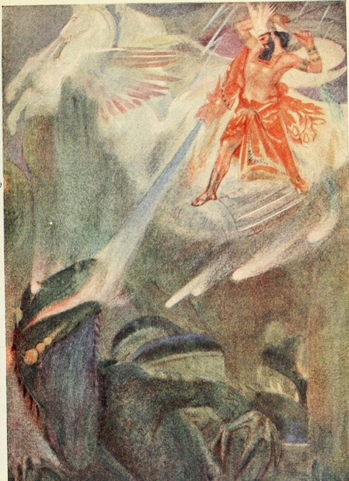
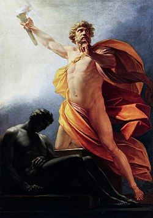
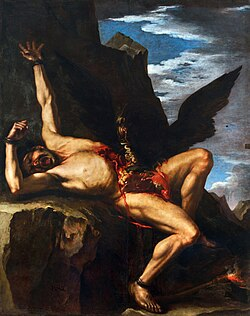

Course: Fantasy & Religion
Lecture #7: Combat Myth, Celtic & Saxon
NOTE: Text in Highlight is Optional
BASIC COMBAT MYTH -- MARDUK
Most myths, as was pointed out in the first two classes, follow some basic outlines. This is simply a variation on that idea and is a form that is followed by many fertility myths and by the Book of Revelation in the bible. The importance of this is in the fact that Tolkien also followed the basic outline in his epic.
The basic myth follows this outline.
- There is something wrong, chaos threatens the peace of the cosmos. Usually the threat comes from the sea but not always.
- There is then a council called, an assembly of the gods, to decide what is to be done to handle the problem.
- At this point a young god, usually a warrior, is either appointed or volunteers to go out and handle the problem.
- There is a battle and victory on the part of the younger god who then returns to the assembly in victory.
- At this point, he is installed as king, or chief god, and given rewards of some kind, such as a new palace, wives, etc.
- A sacred marriage and marriage feast ensue and there is restoration of fertility to the land.
AKKADIAN MYTH: records that Ea and Anu, the gods of Mesopotamia, are threatened by Apsu and Tiamat, which represent fresh and salt water respectively.
This reflects a schism between the oldest of the gods, Tiamat being a dragon and female, and some of the newer deities. Tiamat represents chaos. Marduk, son of Ea, meets in council with the gods and strikes a bargain with his superiors. He is promised the power to declare fates and work miracles.
Marduk destroys Tiamat with the aid of the seven winds and then cuts her in half and creates the heaven and earth. He then creates humans out of her blood. A great feast is given to celebrate his victory and a palace is built.

We see the same scenario in many other stories.
In Canaanite myth, El sends Baal to win victory over the sea (Yam). In Danial Chapter 7, it is the Ancient of Days who sends the Son of Man, who is Michael the archangel, to defeat chaos and evil.
In mythological passages in both Psalms and Isaiah we have YHWH with no intermediary defeating the Leviathan, which apparently is a sea monster of some type. For the Jews, the sea is the uncreated, where chaos reigns.
And finally, in the book of Revelation chapters 4 and 5 we have the same basic myth. The sea is calm (not in chaos) like glass and the assembly of the gods has become an assembly of the elders of the church.
In chapter 5 of Revelation, YHWH grants the gift of Kingship to Jesus voluntarily, rather than having Jesus have to make a deal for it as Marduk did with Ea and Anu.
The whole book ends then with a great feast with "the Lamb" and the church like a marriage. The Lamb being the groom and the church the bride.
What does this have to do with the Lord of the Rings. It is in many respects the same story. The Council that met, and had been meeting, to discuss the problems that middle earth was undergoing as they tried to figure out what Sauron was up to.
Gandalf leads Frodo, Sam, Merry and Pippen to the council at Rivendell. Elrond's council is a turning point in the history of Middle earth and because he himself, with Gandalf and Galadriel, is the wisest of the assembled leaders of the West, his solemn opening statement to them that some force greater than themselves has brought them together at this crisis carries special weight.
Here the council agrees that the Ring must be carried back to Mordor to be destroyed. A silence ensues until Frodo, overcoming "a great dread," speaks up with an effort to offer himself as carrier.
This is Frodo's free choice and he does not bargain for some kind of reward if he does so, as in the old combat myths. What will actually happen cannot be seen but Frodo realizes, as does Elrond, that if any one is to succeed it will be Frodo.
When he does succeed, the reward is bittersweet, as has been discussed. There is feasting and acknowledgement of what he has done but he is wounded, never to fully recover.
His reward is about 2 years after destroying the ring when he and Bilbo are taken from Grey Haven to the lands to the west, as has been discussed. It is Sam, not Frodo, who gets married and has a long life in the Shire, including being mayor.
The parallels are, of course, not total, but there is significant similarities to this basic story that we need to be aware of its construction.
PROMETHEUS:
There is one ancient Greek myth that tells of the forging of the first ring. This story is bound up with the tale of the coming of the gods and the creation of man.
The titans were the giant sons and daughters of Gaea, mother earth. They gave birth to many children who became the spirits of rivers and forests. All of nature was animated by them.
Prometheus was one of the wisest of the Titans whose name means 'foresighted'. He had foreknowledge of the end of the his age and could see the Titans would be overthrown by the lesser race of the gods.
The war between the titans and the gods raged for 10 years horrible years but in the end the gods overwhelmed the titans. Prometheus had taken no part in the war and thus did not share the fate of the rest of his race.
Prometheus want among the new gods and gave these harsh new rulers gifts of wisdom and knowledge. He turned more and more to the art of shaping metals and the substances that came from the earth. He chose the lame son of Zeus, Hephaestos, the least haughty of the gods, and provided a forge and shared his knowledge of the earth. He taught him how to forge metals.
He pursued other crafts as well for he was skilled as a magician so that in time the secret of life itself came to him. Prometheus was the deity who shaped men from clay and breathed into them the breath of life. Furthermore, it was Prometheus who brought to men the gift of fire.

With this gift of fire came the light of wisdom and the heat of unquenchable desire, and all the things that make men greater than beasts and cause them to strive to achieve immortal fame.
The Olympian gods were angry, for they wished no rivals and claimed Prometheus had given mortals what the gods alone should possess. Yet the act could not be undone and the fire could not be quenched.
Zeus ordered Hephaestos to forge a chain of ADAMANTINE, the iron of the gods, that would be unbreakable and for Prometheus to be taken to the White mountains and be chained to the one called the Caucasus forever.
Zeus sent an eagle and a vulture to constantly torment him, tearing out his liver each day, and regrowing at night only to go thru it again. He was in eternal pain.

He was consoled by many nymphs, and spirts, and even men who tried to comfort him, but none could break his bonds. As ages past the relationship between gods and men improved until there was actually offspring of gods and women. One of these was Hercules, the son of Zeus.
Zeus had come to regret his punishment of Prometheus but was restrained by his own unbreakable oath. But when Hercules went to that wilderness of the White mountains, Zeus didn't drive him away, but allowed Hercules to free him.
When Prometheus was free, Zeus spoke to him that he must keep his oath of binding but would also allow Prometheus to be free. Zeus took a broken link of the chain of Adamantine and from Mt. Caucasus took a fragment of rock.
Zeus welded the stone to the link. He then took the hand of Prometheus and about his finger he closed the link of Adamantine and by this device kept his oath to chain the Titan to the rock of the Caucasus forever, and yet fulfilled his promise to let Prometheus walk free. This was how the first ring was made.
Men came to wear rings to honor Prometheus, the father of man and bringer of fire. The ring is a sign of the smith who is master of fire, and the magician who is master of life. Kings who wear rings as a sign of their descent from Prometheus and the titans who once ruled the earth.
SAURON: In Prometheus, the good Titan, we have a mirror opposite of Sauron, the evil sorcerer who brought death and darkness. However, when Sauron appeared to the elves in the second age in disguise as the mysterious stranger Annatar, he must have seemed everything to the Elves that Prometheus was to humans.
Only after Annatar tricked the Elves into forging the Rings of Power did they learn the terrible price of Annatar's gifts.
The price demanded of Prometheu's gifts was that the Titan himself be eternally bound and enslaved. The price demanded of Sauron's gifts was that the Elves be eternally bound and enslaved.
Curiously, Prometheus, the father of men, giver of fire and master of smiths, has a ring forged of iron in the Caucasian mountains: the very place where the secret of Iron-smelting was discovered.
THESEUS:
There is an exact parallel in The Lord of the Rings to the climax of the Greek myth of Theseus and the minotaur. In the Greek tale, Theseus set out with a black sailed tribute ship for Crete and promised his father if he was victorious against the Minotaur he would change the seas to white as a signal of victory. He forgets to do so in his flush of triumph, and his father commits suicide by jumping off a cliff.
In the Ring Trilogy, Denethor, the ruling steward of Gondor sees the black sailed ships of the enemy Corsair fleet sailing toward them, not realizing that Aragorn has captured them. He goes mad with grief and despair and commits suicide. But, like Theseus's father, Denethor is tragically mistaken.
BIBLICAL LEGENDS
THE JUDEO-CHRISTIAN TRADTION:
The contribution of the Judeo-Christian tradition to Tolkien's imaginative writing is both paradoxical and profound. The early Judeo-Christian world is very unlike Tolkien's world for Tolkien purposely created a world that was without formal religion.
Tho Tolkien's characters did not quite worship the Valarian gods, their beliefs were much closer to the panentheism of the pagan Teutons, Celts and Greeks than to the henotheism or, later, monotheism of the Old Testament Hebrews.
We have already discussed many parallels to the fall in covering the Silmarillion but I want to pick up the links to the ring. The strongest links between biblical legends and Tolkien's tales relate to beliefs in the power of rings.
By Biblical times, all kingdoms and nations had long accepted the tradition of the ring as a symbol of a monarch's authority. The king's ring not only marked him as monarch but could be said to possess power in itself.
Often in the king's absence, the ring or the ring's seal could be used to carry the full authority of the ruler. In Genesis, Joseph is given the Pharoh's own ring to rule over all Egypt.
When Joseph interpreted the Pharoh's dream after no one else could, the Pharoh made him his chief counsellor. "and the Pharoah took off his ring from his hand, and put it upon Joseph's hand, and arrayed him in vestures of fine linen and put a gold chain about his neck. Then the Pharaoh said to Joseph: "without thee no man shall lift up his hand or foot in all the land of Egypt."
Moses, who led the exodus of the Hebrews out of Egypt to the promised land of Israel, was commonly associated with the use of magic rings.
Tolkien draws a biblical parallel in The Silmarillion between his Elves and the Hebrew Tribes. Like these tribes, The Elves are a 'chosen people' who endure terrible hardships of mass migration to a 'promised land.
The 'Great Journey' of the Elves across the wilderness of Middle earth is to Eldamar, the promised homeland of the Elves in the Undying Lands; just as the Hebrews come to their promised homeland. Both are comparable in that they are divinely summoned: the Elves by the god Manwe, the Hebrews by the god YHWH.
If Tolkien uses certain biblical themes that connect his Elves with the Hebrews, it is also evident that his mortal Numenorians resemble the biblical Egyptians. Tolkien states this directly in a letter of the late 1950's.
"The Numenorians of Gondor were proud, peculiar and archaic and I think are best pictured in Egyptian terms. In many ways they resembled "Egyptians'--the love of, and power to construct, the gigantic and massive. And their great interest in ancestry and in tombs....."
The Red sea event is paralleled in Tolkien when the King of Numenor whose navy follows the sea roads of the Elves to the Undying lands. Because he won't recognize the authority of the Valarian god, the King of Numenor and his mighty navy are swallowed up by the waters of the western sea.
SOLOMON'S MAGIC RING:
The most famous ring legend was linked with King Solomon. Tradition tells us that Solomon was, among other things, considered to be the most powerful magician of his age. These powers were attributed to his possession of a magic ring. "This "Legend of King Solomon's ring" is certainly the tale that had very profound influence on Tolkien, on his imagination in composition of the ring trilogy.
There can be little doubt that Tolkien was familiar with this ancient biblical tale of a sorcerer-king who (like Sauron) used a magic ring to command all the demons of the earth, and bent them to the purpose of ruling his empire. Just as Solomon uses his magic ring to build his great temple on Moriah, So Sauron uses the One Ring to build his great tower in Mordor. Of all the rings of legend and myth, Solomon's ring most resembles the One Ring of The Lord of the Rings.
Solomon's Ring is also like Sauron's One Ring in that its power can corrupt its master; even one as wise as Solomon. In the figure of the demon Asmodeus we see the subtle agent of evil who corrupts the wise but fatally proud King Solomon of Israel, and thru possession of the ring causes his downfall.
In the figure of the demon Sauron we see the subtle agent of evil who corrupts the wise but fatally proud King Ar-Pharazon of Numenor, and through possession of the ring causes his downfall.
There are other parallels with biblical myth in Tolkien. Just as the Elven King Thingol succeeds in acquiring the brilliant, light radiating jewel called the Silmaril, so the Hebrew King Solomon succeeds in acquiring the brilliant, light-radiating jewel called the Schamir.
Both are heirlooms of their races: The Silmaril was once the sacred jewel of the ancesteral leader of the Elves, Feanor, while the Schamir was the sacred jewel of the ancesteral leader of the Jews, Moses.
Once Solomon obtains the Schamir, it appears to fit perfectly on his ring and doubles the power of his ring and illuminates the 'One name' of God.
The story of Solomon's ring is tied up with the construction of the Temple. Progress on the Temple was very slow as YHWH had forbidden the use of Iron. A great multitude worked on it but they grew emaciated. One master builder came to Solomon and told him that at night, a vampire came and sucked his and his workmen's blood and the same demon spirited away food and gold and other materials used in building the temple.
Solomon prayed to YHWH and Michael the archangel gave him a ring with which he could lock up all the demons of the earth and with their help build the temple. When he put on the ring, he understood the language of everything, the secrets of the earth, etc.
He harnessed the work of the demons, including Beelzebul, their leader. He imprisoned those who carried sickness and the others were put to work cutting stone and other things. Those who didn't cooperate were shut under the great seal into jars.
After Solomon obtained the Schamir, which only the demon Asmodeous knew where to find and was forced to reveal, he was warned by God in a dream about its doubling in power. Asmodeous was kept under bonds by Solomon in his palace as he was not cooperative.
One day Asmodeus enraptured the king with a tale of the power and visions of demons. Solomon asked how they could be so happy and gifted if a mere mortal like himself could keep their greatest prince under bonds. Asmodeus answered that Solomon had only to loosen his fetter and lend him the ring and he would prove his power and ecstatic vision.
Solomon agreed and Asmodeus took the ring and placed it on his hand. By its doubled power the demon rose like a mountain before Solomon until one wing touched heaven and the other earth. He snatched up Solomon and hurled him out of Israel into the vast wilderness of the south.
The most authoritative version of this story reveals that Asmodeus conjured up a counterfeit Solomon who appeared in every way like the king (tho some of his wives and concubines were puzzled by their lord's strange new appetites).
Asmodeus himself flew away in freedom and hurled the ring into the Red sea. Solomon wandered for three years, an unrecognized beggar. He ended up as chief cook for an Ammonite king. Solomon fell in love with Naamah, the king’s daughter and they were both taken to the desert to starve.
Solomon still knew the language of the wild things and they were able to survive until they came to the sea. Solomon helped a fisherman draw in his nets and was rewarded with a fish. When Naamah cleaned the fish, she found a ring in its belly. Solomon put on the ring, gave thanks to YHWH, and transported himself and Naamah back to Jerusalem in a tree. The counterfeit Solomon vanished under the ring's seal.
Solomon was restored to his kingdom and great wealth but grew corrupted again. He even built a temple to Ashtaroth on Mount Moriah for his Jebusite queen.
Then Asmodius brought word that the kingdom would be split at Solomon's death; that the temple and his books would be destroyed and the demons of disease would be released again.
Solomon repented, but the prophecies came true anyhow. Solomon died upright, leaning on his staff, and the demons continued to work on his plans for many years after, not knowing he was dead and the power of the ring was unmanned. At length a snake curled about the staff and it snapped and then the demons scattered.
The ring is thought to have been placed in the Holy of Holies in the Ark of the Covenant itself and never captured. A later magician went to rescue it when the soldiers of Titus were destroying the temple in 70 AD. He saw it and touched it, but then fainted and was carried to a strange land where a voice told him that the ring had been taken back to heaven.
CELTIC AND SAXON MYTH
CELTIC AND SAXON mythology were the two great groups from which most people in the British Isles descended. Tolkien had great love for the story telling traditions of the bold warrior race, the Saxons but he was also vividly aware that these rough Teutonic warriors supplanted the older, more sophisticated Celtic civilization and its fluid language and poetry.
Celtic mythology has played a fundamental part in the shaping of Tolkien's world. His most important source was the Red Book of Hergest which is a manuscript that includes the most important compendium of Welsh legends, The Mabinogion.
This collection has many stories of magic rings. The damsel Luned, the Lady of the fountain, gives a Ring of invisibility to the hero Owain. Lyonesse gives her hero Gareth a magical ring that will not allow him to be wounded. And Percival Long Spear goes on a quest for a gold ring during which he slays the Black serpent of the Barrows and wins a stone of invisibility and gold-making stone.
However, the most important aspect of the Celtic influence on Tolkien relates to how much its mythology contributed to the creation of his "Elves". In general terms it is quite easy to see that Tolkien has largely aligned the traditions of the older Celtic peoples with his Elves; while the invading race of Anglo-Saxons have the characteristics of his men.
Tolkien's Elves are largely based on the traditions and conventions of the Celtic myths and legends of Ireland and Wales. However, before Tolkien the 'Elf' was a vaguely defined concept associated most often with pixies, fairies, gnomes, etc. but Tolkien's Elves are a powerful, full-blooded people who closely resemble the pre-human Irish race of immortals called the Tuatha De Danann.
Like the Tuatha De Danann, Tolkien's Elves are taller and stronger than mortals, are incapable of suffering sickness, are possessed of more than human beauty, and are filled with greater wisdom in all things.
They possess Talismans, jewels and weapons that humans might consider magical in their powers. They ride supernatural horses and understand the languages of animals.
The Tuatha De Danann gradually withdrew from Ireland as mortal men migrated from the east. With his ever present theme of the dwindling of Elvish power on Middle Earth, Tolkien was following the tradition of Celtic myth.
The Elves' westward sailings to timeless immortal realms across the sea, leaving the human race behind in a diminished world trapped in time, was very much the theme of the diminishing of the Tuatha De Danann.
The remnant of this once mighty race was the "Aes Sidhe (Shee). The name means 'people of the Hills, for it was believed that these people withdrew from the mortal realm and hid themselves in the 'hollow hills' or within the ancient mounds once sacred to them.
Tolkien, as in Celtic legends, has remnant populations o f these immortals in all manner of hiding places: enchanted forests (like Lothlorien), hidden valleys (like Rivendell), caves, river gorges and on distant islands.
Elven time is very different from mortal time. and when Tolkien's mortal adventurers pass thru an Elven realm, they experience a jolt in time. Sometimes mistaking hours for years, or years for hours.
Tolkien follows the Celtic tradition that suggests that immortals cannot survive in a mortal world; their powers diminish and ultimately there is a choice between remaining in the mortal world or leaving it forever for an immortal world.
The degree to which Tolkien's Elves were inspired by Celtic models is most obviously demonstrated by looking at his invented Elvish language, Sindarin. Tolkien noted that his invented language and Elvish names of persons and places were 'mainly' deliberately modelled on those of the Welsh. Structurally and phonetically, there are strong links between the two languages.
Tolkien took the sketchy myths and legends of the Sidhe and the Tuatha De Danann and created a vast civilization, history and genealogy for his Elves. He gave them languages and a vast cultural inheritance rooted in real history but flourishing in his imagination.
The Celtic traditions of the Sidhe are all to be found in Tolkien's Elves.
BEOWULF
What Tolkien wanted to restore to Britain was the 'lost mythology' and literature of Anglo-Saxon Britan between the time of the Roman retreat in 419 A D and the Norman conquest in 1066 AD. With the notable exception of Beowulf and a handful of poem fragments, the ruthless obliteration of Anglo-Saxon culture by the Normans was nearly absolute.
In his imaginative writing, Tolkien wished to retrieve something of the atmosphere of that lost age of heroes and dragons so we see Anglo-Saxon elements playing a critical part in his writing.
One sees this in his language and names. Theoden =chief of a nation, Ent=giant, Orc i s demon or goblin in old English, Hobbit is from invented old English "holbytla, or hole builder.
BEOWULF: is an Anglo-Saxon attempt to rival the greatness of the Volsung saga. How do we know this? Because the bard first sings of Sigurd (calling him Sigmund), the greatest of all heroes and dragonslayer. Beowulf will win comparable fame by also slaying a dragon.
Tolkien was an authority on Beowulf and has acknowledged that "Beowulf is among my most valued sources' for his Hobbit tale. This is especially true of the slaying of Smaug and the episode in Beowulf. In both cases, the dragon is enraged by the theft o f a cup by a thief from his treasure hoard.
Both thieves escape detection, and i n both cases the nearby human settlements suffer terribly from the dragon's wrath. The respective champions, Beowulf and Bard, the bowman, manage to slay the dragon. Bard survives, but Beowulf doesn't.
Beowulf's death is mirrored in The Hobbit not by Bard, but by the other warrior king, The Dwarf Thorin Oakenshield, who lives long enough to know that he has been victorious, but dies of his wounds on the battlefield.
FRODO is named after a character in Beowulf, Froda, Lord of the Bards. In his description of the mead hall, the horsemen of Rohan, the gold-roofed feast hall of King Theoden are all taken from Beowulf, which were mortal versions of the God Odin's titanic gold roofed hall Valhalla.
OTHER ANGLO SAXON SOURCES:
Other Anglo-Saxon tales made contributions to the Ring Trilogy also. The Saxon hero, Wayland the Smithy, which were popular in the Middle Ages. He was the greatest craftsman of his race.
In the Middle Ages it became traditional for the swords of great heroes to come from the forge of Wayland the Smith. Even Charlemagne’s sword came from Wayland's forge.
In Wayland the Smith, we have the figure of the gifted but cursed smith who in Tolkien i s manifest in Noldor King Feanor, who made the Silmarils that were stolen by Morgoth. He i s also comparable to Telchar the Dwarf smith who forged the sword inherited b y Aragorn with which Elendil cuts the One Ring from Saruon's hand.
More particularly tho we can see in the tale of "Wayland's Ring" something of the figure of Celebrimbor, Lord of the Elven smiths of Eregion, who forged the Rings of Power.
THE TALE OF WAYLAND'S RING:
Wayland, known as Volund in the version that has come down, begins by winning a Valkyrie wife who, in the form of a swan, Volund captures by taking her plumage. They marry, but after 9 years she finds where the plumage was hidden and flees the mortal world. However, as token of her love for him, she leaves Volund a magical ring of the purest gold.
With the ring, Volunds skills increase dramatically. He produces amazing armor and weapons, especially swords. His own sword can never be blunted or broken and anyone who holds i t cannot be defeated in battle.
The ring is a source of untold wealth. Pounding it on his anvil, it produces 700 gold rings of equal weight. The king of Sweden, captures Volund and makes him his slave. He is hamstrung, exiled to a rocky isle and forced to make jewels, ornaments, weapons for the king.
After many years, he kills the king’s sons, violates his daughter and regains his sword and ring. He makes wings and flies out of his island prison to Alfhiem, the Land of the Elves, where live the finest Smiths in creation. However, Volund is welcomed as a peer.
He fashions many miraculous works for gods and heroes, greater than any he made in the world of men.
In the most common version of the myth, the ring is stolen from Volund by a mortal pirate, Sote the outlaw who becomes obsessed with it. Fearful that it will be stolen, he flees t o a hollow barrow grave where he never sleeps and becomes a haunted and possessed spirit by the power of the ring.
He becomes an immortal ring-wraith, one of the living dead called Barrow wights who haunt graves. Thorsten, a hero, finally wrests the ring from Sote after bitter fighting.
The latter part of the tale of Volund's ring i s a major source for Tolkien for his Hobbits near fatal encounter with the barrow wights. The difference is that although the barrow wights had their own treasure, it was Frodo who possessed the ring.
With the figure of Sote and the barrow wight spirits we see the concept o f a ring that gives mortals immortality and fiendish powers, but which also enslaves them and destroys their human souls.
In Sote's paranoid, ghoulish behavior after he steals the ring, we also perceive something of the character of Smeagol Gollum. For after Gollum murders his cousin and steals the One Ring, like Sote he becomes obsessed with this "precious' ring and in a kind of miserly madness he also buries himself alive.
In the foul tunnels of an abandoned Orc hold beneath the hills, Gollum hides and murders any who dare to come near, for fear that they might steal his "Precious."
CAOLINGIAN LEGENDS
CHARLEMAGNE:
Tolkien pointed out how many readers saw the connection between Aruthur and Aragorn, but few seemed to see the connection with Charlemagne. Aragorn's great task of forging the reunited kingdom of Arnor and Gondor from the ruins of the ancient Dunedain empire after more than a millennium of chaos was historically parallel to Charlemagne's task of creating the Holy Roman Empire from the ruins of the ancient Roman empire.
Geographically the extent of the reunited kingdom of his epic far more closely paralleled the expanse of Charlemagne's realm. Tolkien suggested in a letter written in 1967, "the progress of the tale ends in what is far more like the re-establishment of an effective Holy Roman Empire with its seat in Rome' The parallel is fairly obvious.
It is Charlemagne above all the warrior-kings of Europe who is generally credited with being the most forceful destroyer of the cult of Odin, and his Germanic equivalent, Woten. He brutally suppressed all non-Christian worship. He destroyed heathen temples, burned the sacred groves and forced conversion by the sword.
In Spain he stopped forever the advance of the Saracens. He turned back the tide of Islam and put the worshippers of the prophet Mohammed to the sword. In The Lord of the Rings Aragorn has a similar subduing effect on all worshippers of Sauron. Some other parallels are, both carry magical, ancesteral swords, (Charlemagne's sword was Joyeuse,) both have the power to cure with magical herbs, (Aragorn used 'athelas' to cure those struck by the Black breath of the Nazgul and Charlemagne used Joyeuse to cure those struck by the Black Death. They only worked in the hands of the kings.) Both have wise old mentors (In Charlemagne's Christianized tales, the Wizard figure is replaced by an elderly churchman, Bishop Turpin but is the same white bearded wise old mentor with a Bishops crook instead of wizard's staff.) and both married elf queens. (Charlemagne married an exotic oriental Elf princess Frastrada) Naturally both women were considered the most beautiful women in the world.
THE SERPENT'S RING
The most compelling of the Ring legends is the tale that concerns Charlemagne's marriage to Frastrada and is called, "The Serpent's Ring". This story relates to the enslaving power of the ring and the moral stance in the rejection of the rings power. It shows how a pagan ring can still retain power in the Christian era to overcome even the most devout hero, the Holy Roman Emperor.
At the wedding feast for Charlemagne and Frastrada a snake slithers into the hall with a gold ring in its mouth, drops it into the goblet of the emperor, turns and slithers out.
Believing this is a good omen, Charlemagne places the ring on the hand of his new queen. It is a ring of enchantment that begins to work. Charlemagne's love for Frastrada doubles, and redoubles. It becomes compulsive, almost unbearable. Never can he bear to be parted from one who has it upon his or her hand.
Things go well till Frastrada dies of a disease that even Charlemagne can't fix. Yet, when she dies, the power of the ring does not abate. He refuses to have her buried and he begins wasting away as he watches over her day and night.
Bishop Turpin comes to the room while Charlemagne is in fitful sleep. Like Gandalf who first recognizes the power of the One Ring, Turpin recognizes the power of the Serpent ring.
Wanting to free Charlemagne from the ring's spell, Turpin removes it form the Queen's hand and flees the chamber. When the emperor awakens, he is no longer in savage grief and allows her body to be entombed.
Now Charlemagne feels he had never before realized how important the elderly advisor was and seems to him he can only have meaning and purpose in his life with the friendship of the Bishop.
Turpin realizes the power the ring has is gender neutral but uses this to get Charlemagne to restore his own health and encourage him to attend affairs of his realm.
Turpin, like Frodo, realizes he must reject the power of the ring as it becomes too much of a burden. However, the old bishop mistrusts its sorcerous power and is fearful lest the ring fall into evil hands. He knows the emperor will be enslaved to anyone who puts it on.
He secretly creeps away to the wilderness and looks for a way of disposing of the ring. He finds a remote lake in a forest and throws the ring into it water in his attempt to neutralize its power. To his great relief, he found that Charlemagne's infatuation for him has diminished to the simple comradeship of old.
However, this was not the end, for the serpent's ring was not destroyed by being thrown in the lake, any more than the One Ring was destroyed when it was lost in the Anduin River. Thus, the power of the serpent's ring called out to Charlemagne.
He is restless, unable to concentrate, distracted. He feels compelled to travel and roam distant woodlands. He often hunts, hoping the chase will dispel his mood.
One day he enters a particular forest where he feels compelled to go deeper where he finds the lake that Turpin had thrown the ring into. Great joy fills Charlemagne and he becomes enraptured with the lake. He wants to remain their all his life.
Thus the emperor commands that a great palace and his new court be built there. This is how Aix-la-Chapelle became the capital of Charlemagne's realm.